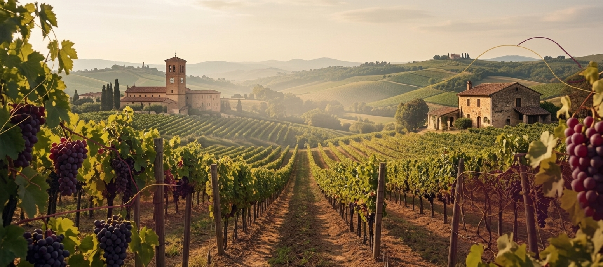

Conheça o projeto que busca mostrar Jundiaí de um jeito diferente.
O Viva Jundiaí é um projeto criado com o objetivo de apresentar a cidade de Jundiaí de forma simples, bonita e acessível.
Através deste site, reunimos informações sobre pontos turísticos, serviços, curiosidades, história, cultura e experiências que podem ser encontradas na cidade.
Nossa proposta é valorizar Jundiaí e mostrar que a cidade possui diversos lugares, histórias e experiências que muitas vezes passam despercebidos no dia a dia.
Conheça lugares que fazem parte da cidade e que podem ser visitados.
Descubra fatos, tradições e elementos importantes da história de Jundiaí.
Explore informações sobre áreas verdes, paisagens e espaços naturais da cidade.
Encontre fatos interessantes que ajudam a conhecer Jundiaí de uma maneira diferente.
Este site foi desenvolvido como parte de um trabalho escolar, utilizando conhecimentos de desenvolvimento web.
Durante o desenvolvimento foram utilizados recursos como HTML,CSS e JavaScript para estruturar e estilizar as páginas do projeto.
A criação do site também teve como objetivo desenvolver conhecimentos de pesquisa, organização de informações, design e programação.
Explore nosso site e descubra um pouco mais sobre essa cidade.